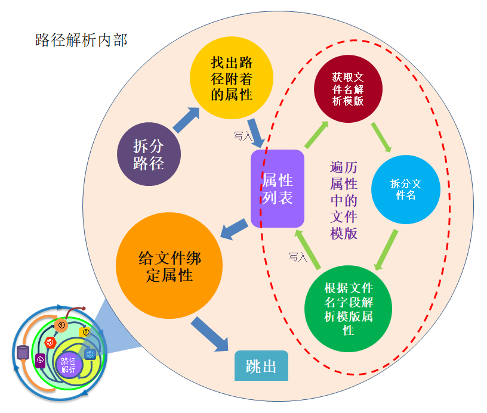

-
一、序
我们知道，解析流程最开始的阶段就是路径解析，而一个文件是否能够进入解码的流程，其首要满足的要素就是路径解析成功。 而路径解析作为解码后台的一个部分，理解起来相对是比较难的。再加上涉及的表之多，逻辑较深，所以不是很好理解。
针对以上三个原因，路径解析的流程需要单独阐明。
-
二、作用
有很多的属性，只通过解析文件是不能获得的，比如项目类型，测试类型等，但是有了路径解析，通过给目录设定属性， 就使得在此目录下的文件也继承了这种属性。从而可以为文件绑定各种必要的属性。
路径解析的作用就是“捆绑属性”，就是将路径上面附着的属性，捆绑到此路径下所有的文件上。 例如：路径A上附着的项目类型为【日常优化】，那么只要是上传到A目录下面的文件，正常解码后所属的项目类型就是【日常优化】。
可附着的属性非常之多，有：文件名、文件路径、当前文件名、原始文件类型、当前文件类型、项目类型、业务类型、测试类型、数据库ID、 年、月、地域类型、地域值、运营商、设备型号等，其中红色属性为主要目的。
-
三、解析原理
-
外层解析流程

路径解析的外层解析流程，实际上就是文件从 FTP 目录搬移到 work 目录的流程。此流程默认每5分钟执行一次。 外边是一个大循环。每次循环都会访问数据库，加载每个数据库的路径解析配置，然后进入到文件检索处理流程。
在文件检索处理流程中，进行着检索和处理的同步工作。 即每当检索到一个文件后，先判定文件有效，然后进行路径解析，之后做插表和错误处理。 这些工作都做完后，才能进入下一次的检索处理流程。这是一个小循环。当这个循环结束后，即检索的文件都处理后，才能跳出到大循环中。
-
内部解析流程
内部解析流程为真正的路径解析部分。所谓路径解析的路径，指的就是文件的相对路径名， 即绝对路径从Ftp之后开始截取的部分。也就是路径解析配置工具中看到的那部分路径树。
先将相对路径名拆分成一个个的目录文件夹名字。然后结合路径解析的配置，找到对应节点的全部属性，接着存放到属性列表中。 然后，拆分文件名，根据文件名命名模板，解析出对应的属性，添加到属性列表中。 此时和文件可能有关联的属性就都在列表中了。最后， 将需要的属性全部绑定到文件身上。一个文件路径解析就完成了。最后跳出循环。
-
-
四、路径解析表
与解码程序路径解析相关的表有如下：
路径解析关联表
表名 存放数据说明 tb_cfg_static_dbsetting 存放各个数据库连接信息 tb_cfg_dirparser_dir 存放目录的层级和层级序号 tb_cfg_dirparser_file 存放文件类型和对应的ID tb_cfg_dirparser_path 存放目录层级关系，目录序号，已经目录对应属性关心 tb_cfg_dirparser_part 存放解析类型信息列表中配置的内容 tb_cfg_dirparser_file_part 存放文件名解析模版表中配置的内容 tb_cfg_static_areatype 存放地域类型信息 tb_cfg_static_arealist 存放地域内的场景列表信息 tb_cfg_static_point 存放CQT地域类型经纬度的信息 tb_cfg_static_year 存放年份和对应数值 tb_cfg_static_month 存放月份和对应数值